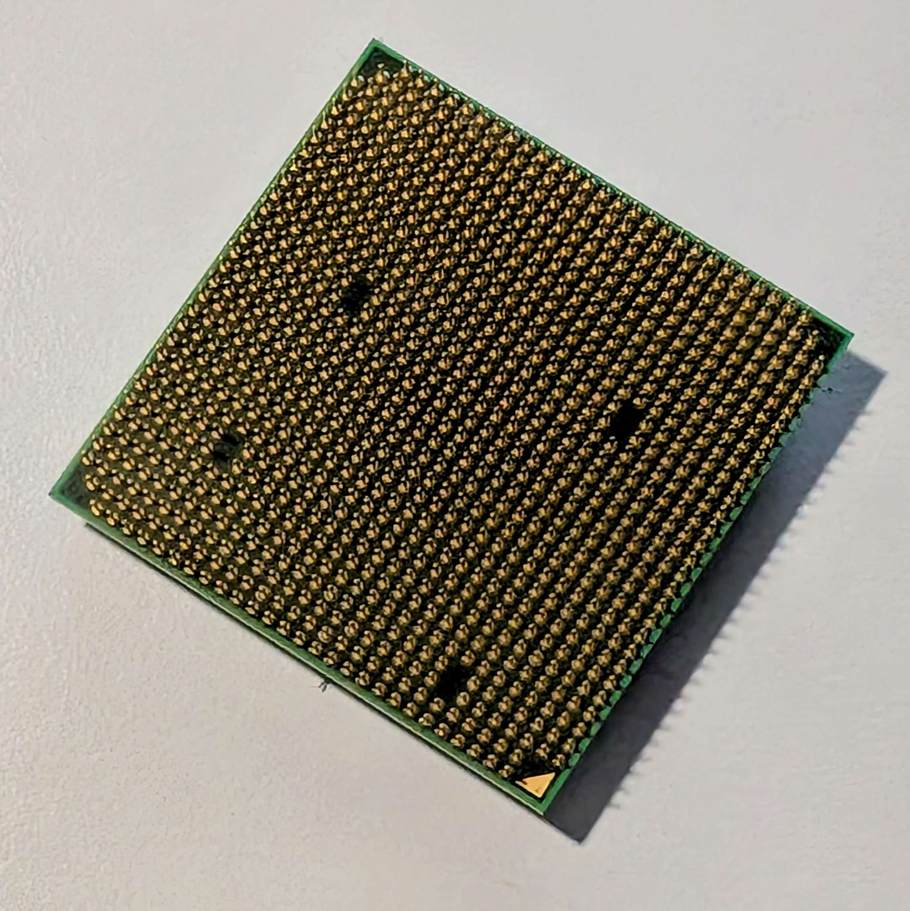

Hardware počítače představuje veškerou fyzickou (interní i externí) složku počítače, na kterou si můžeme šáhnout, a která se podílí na chodu počítače.
Hardware můžeme rozdělit na externí a interní:
- Externí - všechny komponenty, které připojujeme k
počítači. Monitor, myš, klávesnice, tiskárna…
- Ten ještě můžeme rozdělit na vstupní (input) a výstupní (output) -
I/O zařízení:
- Input - jsou všechna zařízení, která posílají data do počítače - myš, klávesnice…
- Output - jsou všechna zařízení, která přijímají data z počítače - monitor, tiskárna…
- Ten ještě můžeme rozdělit na vstupní (input) a výstupní (output) -
I/O zařízení:
- Interní - všechny komponenty uvnitř počítačové skříně. Základová deska, procesor, SSD…
Interní komponenty
Základová deska
Základová deska je hlavní obvodová deska, která propojuje všechny ostatní komponenty a umožňuje jejich komunikaci.
Při výběru základové desky je důležité vybrat správný model tak, aby procesorová patice seděla s procesorem. Jednotlivé desky se mimo typ patice liší počtem jednotlivých prvků a nad velikostí spotřeby energie.
Motherboardy se také dělí velikostí. Standartní velikost je ATX, která má všechny potřebné konektory a sběrnice se standartním 24 pinovým konektorem pro zdroj. M-ATX je menší s méně konektory, ale specifikace jsou jinak stejné. ITX je ze všech nejmenší.
Důležité jednotlivé prvky:
- Procesorová patice (CPU socket) Místo, kde je upevněn procesor (piny cpu se zasunou do jednotlivých zdířek).
- RAM sběrnice (RAM sloty) Konektory pro upevnění destiček paměti RAM.
- PCI sběrnice PCI (Peripheral Component Interconnect) je druh sběrnice, která umožňuje připojení rozšiřujících karet (grafická karta, síťová…)
Existují dva druhy PCI sběrnic. Klasické PCI - starší, dnes už nepoužívané a PCI Express (PCIe) - modernější a univerzálnější. PCIe se ještě dělí podle počtu linek, to určuje jak velké a náročné karty mohou být do daného slotu připojeny (PCIe 16 je třeba určena pro GPU).
PCI: PCIe:
- Konektory disků Místa kde se připojují HDD a SSD disky.
SATA disky se připojejí do těchto konektorů:
A M.2/NVMe (a jiné destičkové SSD) se připojují do podobných konektorů:
- Napájecí konektory Zajišťují přívod energie ze zdroje a možnost napájení ostatních komponentů. Hlavní 24 pinový konektor pro základovou desku (ATX motherboard):
- CMOS baterie (BIOS baterie) Menší lithiové baterie, které udržují obvod systémových hodin a systémová nastavení i když je počítač odpojen od napájení.

Procesor (CPU - Central Processing Unit)
Procesor zpracovává všechny výpočty a instrukce počítače.
Důležité parametry procesoru jsou: 1. Počet a typ jader/vláken - jádra “rozkouskovávají” procesor do více (podle počtu jader) menších sekcí, které všechny fungují jako samostatné jádro. Díky tomu může procesor vykonávat více úkonů najednou. Vlákna fungují na podobném principu a virtuálně rozdělují jednotlivá jádra až na dvě části. Takže 4-jádrový procesor bude mít maximálně 8 vláken.
Frekvence - udává kolik miliard cyklů (u GHz) dokáže CPU vykonat za jednu sekundu.
Cache paměť - je velmi rychlá paměť (SRAM - statická), která se nachází v blízkosti procesoru a ukládají se v ní často používané data z paměti RAM.
TDP - Thermal Design Power - je parametr ukazující kolik tepla procesor vydá za náročného fungování (ve wattech).
Při výběru CPU musíme brát samozřejmě ohled na výkon, ale i na kompatibilitu se základní deskou. V dnešní době jsou dva hlavní výrobci desktopových procesorů a to Intel a AMD. Ty jsou prominentní také v laptopových procesorech, kde se však v dnešní době stávají populárními ARM (CPU např v mobilech) jako je Snapdragon. Apple má své vlastní procesory řady M.
Procesor může také obsahovat integrovanou grafickou kartu, což bývá časté právě u laptopových čipech.

Paměť RAM
RAM - Random Acces Memory - je dočasné uložiště pro běžící programy a data, které se resetuje po vypnutí počítače.
Dělení:
RAM můžeme dělit podle její kapacity. Jako obvykle se jedná o řadu dvojnásobků, standartně se vyskytují paměti o velikostech 2 GB, 4 GB, 8 GB, 16 GB, 32 GB…
Důležitější je typ paměti: 1. DIMM - klasická velká paměť ve stolních počítačích.
- SO-DIMM - menší paměť v laptopech.
Pro celopočítačové paměti RAM se využívá DRAM - dynamická, která potřebuje být obnovována. Ta využívá technologie DDR - Double Data Rate - která dokáže posílat data dvakrát tak rychle, než SDR RAM. Dělí se na generace (DDR3, DDR4, DDR5…).
Grafická karta (GPU - Graphics processing unit)
Zajišťuje výpočty pro zobrazení obrazu, náročné grafické operace, hry a práci s videem.
Uložiště
Trvalé uložení dat a operačního systému.
Dělí se na HDD a SSD: 1. HDD - hard disk drive - je mechanický disk s čtecí hlavou a pohybujícím se diskem. HDD jsou levné s velkou kapacitou, ale náchylnější na fyzické poškození a pomalejší.
- SDD - solid state drive - je polovodičový disk bez jakýchkoliv mechanických částí. SSD jsou rychlejší, ale mají nižší kapacitu (v poměru s cenou). SSD jsou buď stejně jako HDD připojeny přes SATA konektor nebo přes speciální M.2 (popřípade jiná velikost), které obvykle poskytují uložiště přes PCIe.
Zdroj (PSU - Power Supply Unit)
Převádí elektrickou energii na napětí potřebné pro komponenty. Důležitým parametrem je výkon zdroje, která udává maximální množstvi energie (ve wattech), které zvládne zdroj dodat (500 W, 750 W…)
Dostatečná energie je velmi důležitá, protože bez ní by byl systém velmi nestabilní.
Zdroje mají certifikaci (Gold, 80 PLUS Bronze), která udává účinnost daného zdroje.
E-waste je velkým tématem dnešní doby, vzniká nahrazováním starších modelů technologií novějšími. Největší zdroje e-wastu jsou mobilní zařízení a notebooky, které jsou dělány bez možností opravy, proto je musí uživatel jednoduše nahradti.
V nejlepším případě se elektronický odpad recykluje nebo repasuje, ale velmi často se stává, že skončí na skládkách nebo spalovnách a ztrácí se tak cenné suroviny. Elektronika také obsahuje spoustu jedovatých látek, které se tak mohou dostat do vody.
Mikrokontrolery jsou malé, levné počítače nebo čipy, které mají veliké využití. Slouží k integraci do větších obvodů nebo k automatizaci třeba k chytré domácnosti. Nejpopulárnější je raspberry Pi, což je samostatná počítačová jednotka na samostatné desce. Arduino je základní mikrokontroler pro začátečníky, který se využívá k malým elektronickým projektům.